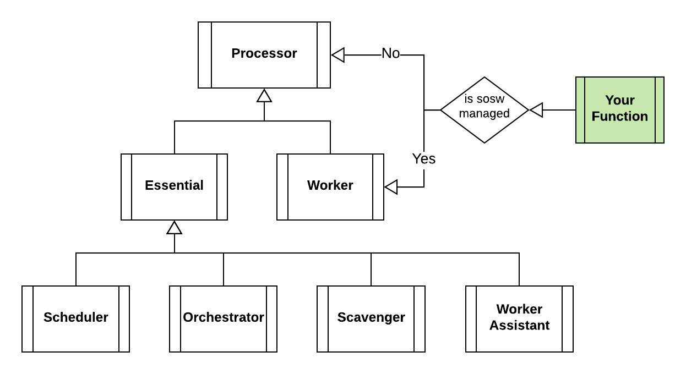

Essentials
Processor is the prototype class that may be used as base class for both Processors of your Lambda functions and components.
The two child classes Essential and Worker are used for Lambda functions.
Essential implements the methods and properties for sosw essential Lambdas, while the Worker
has the mechanisms for your custom functions that are being orchestrated by sosw.

Essentials: